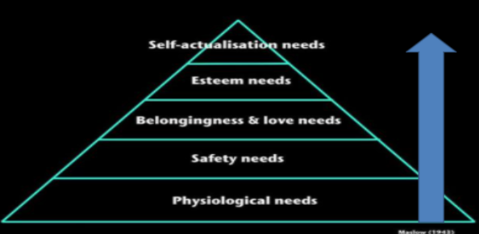
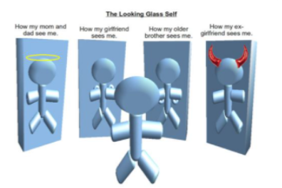

Theories of Individual Development
Callout
Callout
Developmental Theories
The theories that will be discussed all offer a unique perspective on how individuals develop. Each theory will outline unique stages and areas of development that will be used to explain various stages of life.
As you read, pay particular attention to how the theory explains emerging adulthood, and adulthood in later life. You will need to use this information later in the activity. Complete this Developmental Theories Template to organize your information:
Psychosocial
Erik Erikson created the theory of Psychosocial Development. According to this theory, individuals experience a social crisis at each stage of development. Whether the crisis is resolved positively or negatively at each stage will affect a person's personality and how he or she develops throughout life.
There are 8 stages in Erikson's theory:
Adolescence: Crash Course Psychology
Seasons of Life
Daniel Levinson was a psychologist who investigated individual development and proposed a Season of Life theory.
In this theory, there are 4 seasons, and each season lasts approximately 25 years.
4 Developmental Periods/Seasons:
Callout
During each season there are many transitions that individuals need to make.
A theme throughout all of Levinson's adult stages is the concept of a dream. Essentially the dream describes one's ideal life and usually includes ideas about work, family, and community roles.
People often compare where they are in life with their dreams. This can also lead to feelings of satisfaction (or not) with their "place" in the world.
Hierarchy of Human Needs
Abraham Maslow took a humanist perspective on development and proposed that human motivation is based on a hierarchy of needs.
There are 5 interdependent stages of human needs that must be fulfilled in order for a person to reach self-actualization.

The stages are presented in a hierarchy and move from the bottom of the pyramid, upwards.
(beginning at 1 moving to 5:
5. Self-Actualization
4. Esteem
3. Belongingness and Love
2. Safety
1. Physiological
Individuals are capable of moving up a level once the needs at each stage are met.
Often individuals fail to move up the hierarchy because they have unmet needs at a particular stage. Some people end up moving back and forth between levels depending on their life
circumstances.
Maslow indicated that very few people ever make it to the top of the hierarchy, the self-actualization stage.
Psychosexual
Callout
Sigmund Freud developed the psychosexual theory to explain how a child's personality develops.
This is a well-known and controversial theory because his work was largely centered around human sexuality, and although it was centered on child development, he mainly worked with troubled adults.
Freud believed that a child's personality formed by passing through several different stages. Each stage was marked by pleasure-seeking energies, and satisfying desires and urges were of central importance and the driving force behind the behavior. One moves throughout the stages by learning to satisfy the fixations of the libido at each stage.
According to this theory, personality is formed early in life by experiences and continues to influence actions throughout life.
Stages of Psychosexual Development:
Symbolic Interactionism
George Herbert Mead developed a concept of self and proposed that it was determined by one's Interactions with others. These Ideas gave rise to symbolic interactionism in the 20th century.

Callout
He thought that how people perceive themselves is largely determined by how they think other people view them. He also suggested that people's perception of self is impacted by a number of assumptions they make about themselves and how others view them.
According to this theory, people base their actions on the meanings they associate through their interactions and interpretations of objects, events, ideas and other people.
Different people assign unique meanings to things based on their own experiences.
Tabs
Multiple Choice Activity: Theories of Individual Development
Multiple Choice
Multiple Choice
Multiple Choice
Multiple Choice
Multiple Choice
Multiple Choice
Multiple Choice
Multiple Choice
Multiple Choice
Multiple Choice